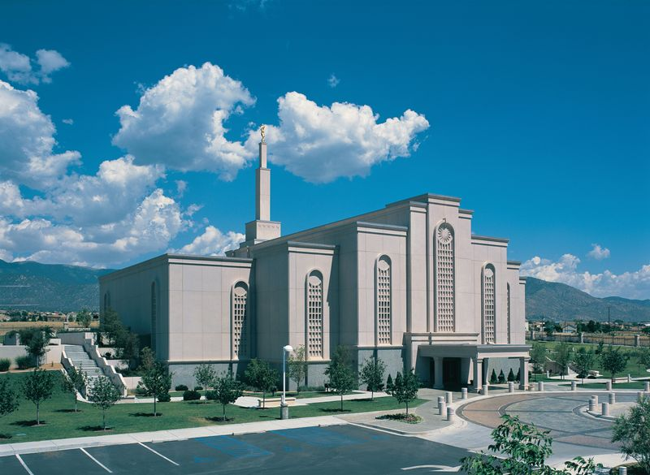
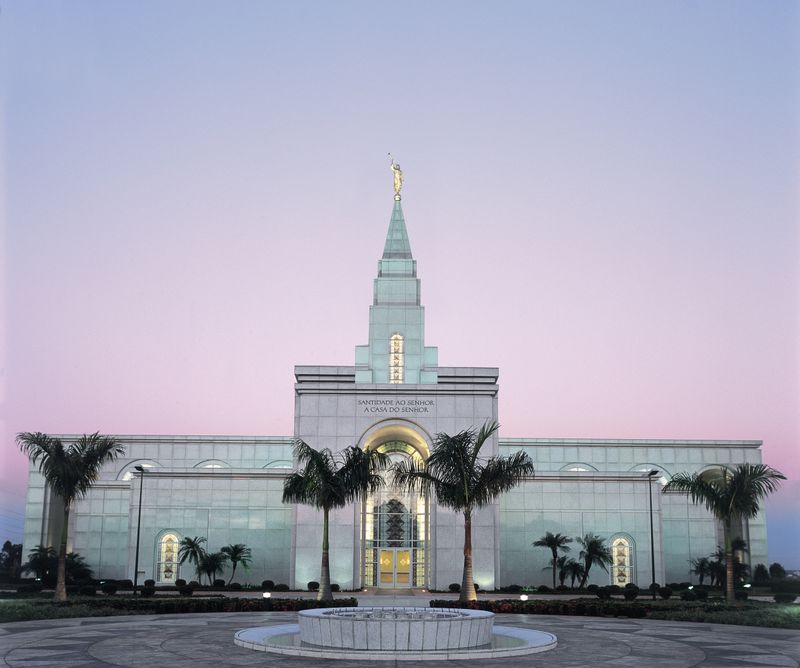
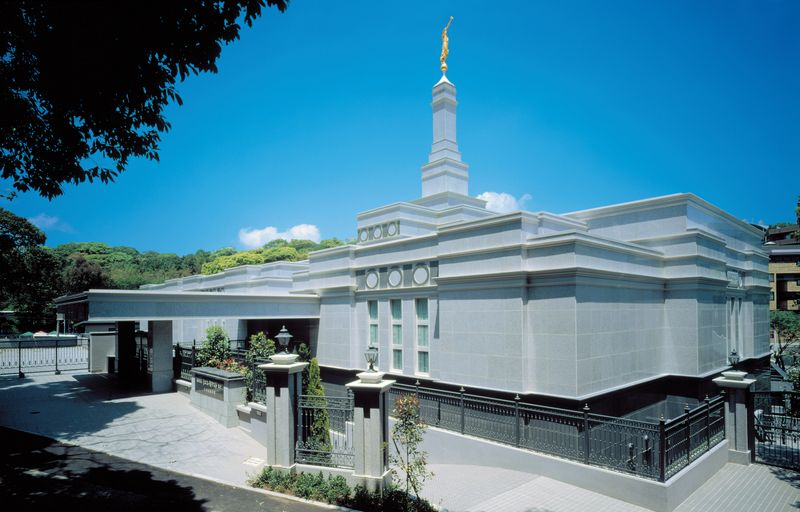
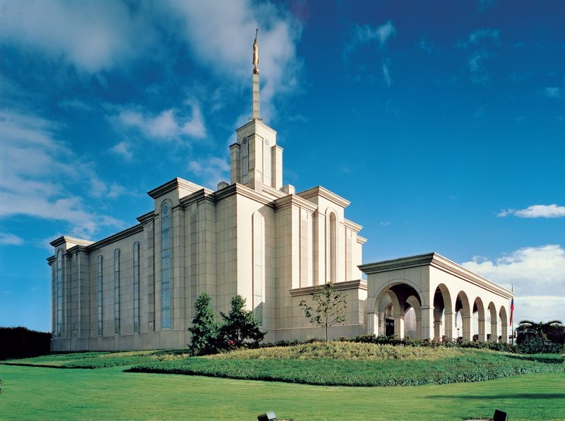

Home
-

Fuente en el Templo de Tijuana, México -
 Templo de Albuquerque, Nuevo México -
Templo de Bountiful, Utah -
 Templo de Campinas, Brasil. -
Templo de Copenhague, Dinamarca -

Templo de Córdoba, Argentina -
 Templo de Fukuoka, Japón -
 Templo de Bogotá, Colombia -

Templo de Seúl, Corea